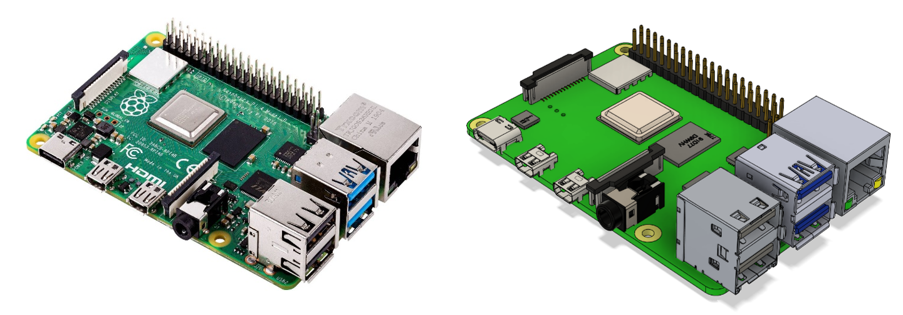
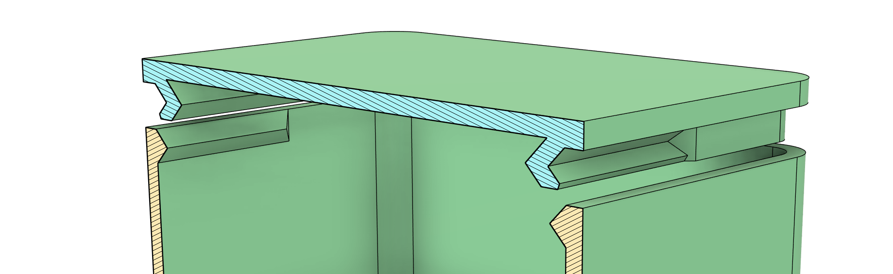
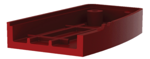
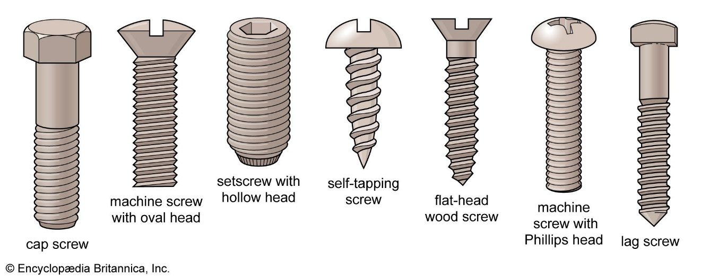
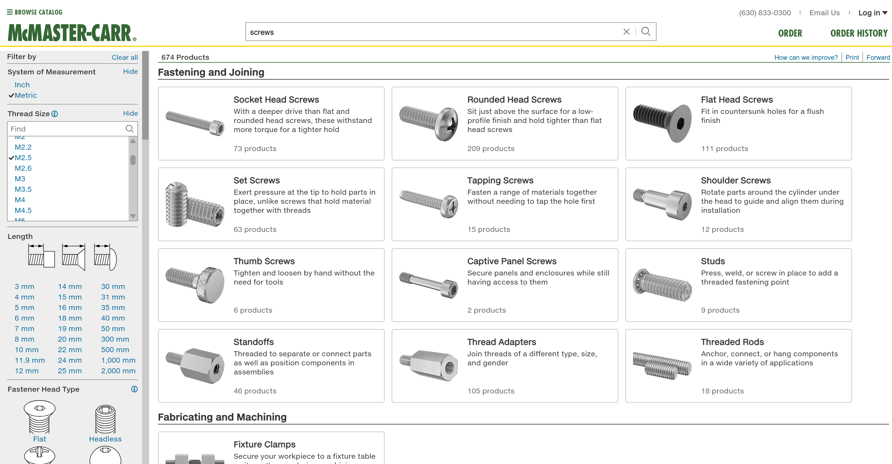
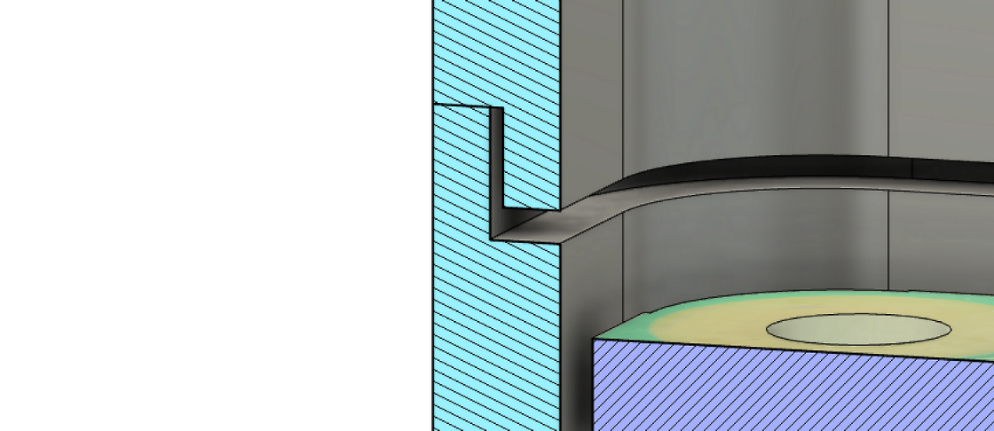

Behuizing ontwerpen
Behuizingen zijn superbelangrijk bij het ontwikkelen van een product. Ze beschermen onderdelen, maken het product gebruiksvriendelijk en geven het een mooie uitstraling. Zeker bij elektronische projecten zorgen behuizingen ervoor dat bedrading en losse componenten veilig en netjes opgeborgen zijn.
We behandelen de belangrijkste stappen van het ontwerpproces, van voorbereiding tot de technische details:
-
Eisen, wensen en componentenanalyse: bepalen wat je behuizing moet kunnen en welke onderdelen erin komen.
-
Schetsen en basisvormen: verkennen van verschillende indelingen en ontwerpen van een eerste vorm.
-
Constructief ontwerpen: kiezen van wanddiktes, toevoegen van verstevigingen, montagepunten en ventilatieopeningen.
-
Ruimte en toleranties: zorgen voor voldoende speling rond onderdelen, poorten en schroefgaten.
-
Montagehulp en afwerking: ontwerpen van lipjes, snap fits en afronden van hoeken voor een betere kwaliteit en gebruiksvriendelijkheid.
-
Ontwerpregels en tips: praktische richtlijnen voor wanddiktes, ribbels, bosses en uniforme wanden.
Aan het eind van de handleiding vind je opdrachten en bronnen die je helpen om je ontwerp nog beter te maken.
Kortom: deze handleiding geeft je alle handvatten om een sterke, slimme en professionele behuizing te ontwerpen!
Maak een lijst met eisen
Een goede behuizing begint met een duidelijk overzicht van de onderdelen die erin moeten passen. Daarom analyseer je eerst welke componenten je gaat gebruiken, wat hun afmetingen zijn, hoe ze bevestigd worden, en welke aansluitingen toegankelijk moeten blijven.
Voordat je begint met het ontwerpen, is het belangrijk om ook goed in kaart te brengen wat de behuizing moet kunnen en hoe en waar deze gebruikt wordt. Moet de behuizing bijvoorbeeld tegen stoten kunnen, waterdicht zijn, makkelijk te openen zijn of vooral compact blijven? Door eisen en wensen vooraf duidelijk op te stellen, werk je veel gerichter en voorkom je dat je later belangrijke zaken over het hoofd ziet.
Denk niet alleen aan de onderdelen zelf, maar ook aan het dagelijks gebruik: wie gebruikt de behuizing, hoe vaak, en onder welke omstandigheden? Dit heeft invloed op de materiaalkeuze, de vormgeving en de montage.
Vaak is het handig om een lijst te maken van alle onderdelen en eisen, en deze later tijdens het ontwerpen af te vinken.
Tip: gebruik digitale 3D-modellen van onderdelen (bijvoorbeeld uit een datasheet of online bibliotheek) om nog preciezer te werken. Handige websites hiervoor zijn:
Gebruik deze modellen als referentie om de juiste plaatsing te bepalen en voldoende ruimte te reserveren.

Figuur 1 3d model van de Raspberry Pi 4b via GrabCAD
Schetsen en Basisvormen Ontwerpen
Als je weet welke onderdelen en eisen je hebt, kun je beginnen met het verkennen van verschillende indelingsopties. Dit betekent dat je nadenkt over hoe je de onderdelen in de behuizing plaatst: naast elkaar, boven op elkaar, in een rij of in een andere slimme vorm. Soms kies je voor een compacte indeling om ruimte te besparen, soms juist voor een ruimere opstelling om onderdelen beter bereikbaar te maken.
Maak eerst een aantal snelle schetsen op papier waarin je verschillende mogelijkheden verkent. Dit hoeft nog niet netjes of gedetailleerd te zijn; het gaat erom dat je verschillende ideeën onderzoekt voordat je verder gaat.
Daarna ontwerp je eenvoudige basisvormen voor je behuizing. Denk aan dozen, cilinders, bollen of combinaties hiervan. De keuze voor een basisvorm hangt vaak af van de functies, het uiterlijk en de manier waarop de behuizing gebruikt wordt.
Belangrijke vragen bij deze stap zijn:
-
Welke indeling zorgt voor de meest logische en praktische plaatsing?
-
Welke vorm past het beste bij de functie en het gebruik van de behuizing?
-
Hoe zorg je ervoor dat de behuizing stevig blijft en toch makkelijk te maken is?
Tip: gebruik in Fusion 360 parameters om de basisafmetingen vast te leggen (zoals lengte, breedte, hoogte). Zo kun je later eenvoudig en snel aanpassingen doen aan je ontwerp zonder alles opnieuw te moeten tekenen. Veelgebruikte parameters zijn bijvoorbeeld:
-
Lengte (Length)
-
Breedte (Width)
-
Hoogte (Height)
-
Wanddikte (WallThickness)
-
Speling (Clearance) --- bijvoorbeeld ruimte tussen onderdelen of marges rondom een printplaat
Door deze basiswaarden als parameters in te stellen, blijft je ontwerp flexibel en voorkom je fouten bij aanpassingen.

Figuur 2 links: losse componenten, midden: eerste schets om voor de indeling, rechts: componenten in behuizing
Constructieve Ontwerpen
Als de basisvorm en indeling bepaald zijn, ga je nadenken over de constructieve details van je behuizing. Dit betekent dat je ervoor zorgt dat het ontwerp niet alleen functioneel en mooi is, maar ook stevig, praktisch en goed maakbaar.
Het bevestigen van behuizingen
Voor het verbinden van onderdelen van een 3D-geprinte behuizing zijn er verschillende mogelijkheden: klikverbindingen (snap-fits), schroefverbindingen en flexibele scharnieren (living hinges).
Klikverbindingen en drukverbindingen zijn vooral handig als de behuizing niet vaak geopend hoeft te worden. Ze zijn makkelijker te ontwerpen, omdat de verbinding niet extreem slijtvast hoeft te zijn.\ Voor snelle prototypes kun je ook gewoon lijm gebruiken. Dat is een eenvoudige manier om onderdelen permanent aan elkaar te bevestigen.

Figuur 3 doorsnede van behuizing met snap fit deksel
Klikverbindingen worden veel gebruikt om 3D-geprinte behuizingen stevig te sluiten zonder extra materialen.

Figuur 4 behuizing met schroefverbinding met heated inserts
Schroefverbindingen zijn een sterke en snelle oplossing als je wilt dat de behuizing meerdere keren makkelijk open en dicht kan zonder slijtage.
Je kunt hierbij gebruik maken van:
-
Zelftappende schroeven: schroeven die direct in het kunststof snijden.
-
Heated inserts: metalen inzetstukken die je met een soldeerbout in het plastic smelt. Hierdoor kun je gewone machinebouten gebruiken en blijft de verbinding veel langer stevig.
Wanddiktes kiezen
De dikte van de wanden bepaalt voor een groot deel de stevigheid en het gewicht van de behuizing. Bij 3D-printen wordt vaak een wanddikte van 1,5 tot 2 mm gebruikt. Voor grotere behuizingen of zwaardere belasting kan een dikkere wand nodig zijn. Let op dat wanden niet te dun worden, anders kunnen ze breken of kromtrekken. Zorg voor een minimale wanddikte van 0,8 mm, oftewel twee keer de diameter van de printernozzle (0,4 is standaard).

Figuur 5 doorsnedes van cases, let op wanddiktes
Verstevigingen en ondersteuningen
Soms zijn extra verstevigingen nodig om de constructie sterker te maken, vooral bij grotere oppervlakken of belasting op specifieke punten. Denk aan:
-
Ribbels aan de binnenkant van de wanden
-
Dikkere hoeken of randverstevigingen
-
Interne draagconstructies om onderdelen te ondersteunen
Zo blijft de behuizing stevig zonder dat je overal dikke wanden nodig hebt.

Figuur 6 Ribbels aan de onderzijde van de behuizing voor versteviging
Montagepunten en schroefgaten ontwerpen
Bedenk hoe de onderdelen en de behuizing zelf worden vastgezet. Veelgebruikte oplossingen zijn:
-
Schroefgaten met een verdikking eromheen voor extra stevigheid
-
Klikverbindingen of inkepingen voor onderdelen die zonder schroeven vast blijven zitten
-
Houders voor printplaten, batterijen of displays

Figuur 7 links: klikverbinding om pcb vast te zetten, rechts: houder voor printplaat (paars)
Bossen en gaten
Wanneer je schroefbevestigingen gebruikt, is het belangrijk om bossen (verstevigde cilinders rond een schroefgat) toe te voegen. Bossen vergroten de stijfheid van de behuizing en voorkomen dat het materiaal vervormt als je een schroef aandraait.
-
Als een schroef direct in het kunststof draait, maak het gat dan 0,3 mm kleiner dan de buitendiameter van de schroef.
-
De breedte van de bos moet minimaal gelijk zijn aan de diameter van het gat.
-
Combineer bossen waar mogelijk met ribbels of hoekverstevigingen (gussets) om scheuren en breuken te voorkomen.

Figuur 8 links: bevestigingsgat in pcb, rechts: bossen met ribbels (links) en hoekverstevigingen (rechts)
Schroeven voor een 3D-geprinte Behuizing
Bij het ontwerpen van een 3D-geprinte behuizing zijn er een paar veelgebruikte soorten schroeven:
-
Machineschroeven (machined threads):\ Geschikt voor constructies die meerdere keren geopend en gesloten moeten worden. De schroef gaat door een iets ruimer gat en draait in een moer, een draadbus of een ingesmolten heat-set insert. Maak het geboorde gat hiervoor iets groter dan de buitendiameter van de schroefdraad (free fit).
-
Zelftappende schroeven (self-tapping threads):\ Ideaal voor onderdelen die maar een paar keer gemonteerd hoeven te worden. De schroef snijdt zijn eigen draad direct in het kunststof. Het geboorde gat moet hierbij iets kleiner zijn dan de buitendiameter van de schroef.
-
Bolkopschroef (bijv. panhead, rounded head):\ Een bolkopschroef heeft geen verzonken gat nodig. De kop blijft zichtbaar bovenop het materiaal liggen. Dit is handig en snel bij kunststof behuizingen.
-
Verzonken schroef (bijv. flat head, countersunk):\ Een verzonken schroef heeft een schuine onderkant en wordt gebruikt in combinatie met een verzonken gat. Daardoor ligt de schroef vlak in het oppervlak. Dit geeft een netter uiterlijk, maar vraagt om extra aandacht bij het ontwerpen van het gat.
Tips:
-
Gebruik bij voorkeur standaardmaten zoals M2, M2.5 of M3, passend bij gangbare PCB\'s en sensoren.
-
Voor printplaten (bijvoorbeeld van Adafruit) zijn M2.5 bolkopschroeven meestal geschikt.

Figuur 9 soorten schroeven
Overzicht: Welke schroef kies je?
| Schroeftype | Gebruikssituatie | Gatmaat ontwerp | Opmerkingen |
|---|---|---|---|
| Machineschroef | Meerdere keren openen/sluiten | +0,2 tot 0,4 mm groter dan buitendiameter (free fit) | Gebruik met moer, draadbus of insert |
| Zelftappende schroef | Eenmalige of incidentele montage | -0,2 tot -0,4 mm kleiner dan buitendiameter (press fit) | Schroef snijdt zelf in het plastic |
| Rounded head (panhead) | Bij bevestigen van een PCB of vlak oppervlak | Gat: +0,2 tot 0,4 mm groter; Chamfer: 82° hoek, 0,5–1 mm diep | Kop ligt gelijk met het oppervlak |
| Flat head (countersunk) | Voor mooie vlakke afwerking met verzinking | Gat: +0,2 tot 0,4 mm groter; Chamfer: 82° hoek, 0,5–1,5 mm diep | Voor stevige en nette verbinding |
McMaster-Carr plug-in in Fusion 360
McMaster-Carr is een uitstekende bron om echte schroeven in je ontwerp te gebruiken:
-
In Fusion 360 kun je via Insert → McMaster-Carr Component direct schroeven zoeken.
-
Kies het type (bijv. M2.5 platkop), selecteer het materiaal (bijv. verzinkt staal) en download het STEP-bestand.
-
Zo plaats je realistische schroeven in je model en controleer je makkelijk de passing en de ruimte.
Voordeel: McMaster-modellen zijn nauwkeurig en geven direct inzicht in afmetingen zoals de schroefdiameter en aanbevolen gatgrootte.
Tip: verlaag bij veel schroeven de modelkwaliteit (LOD) zodat je computer niet vertraagt door het tekenen van alle schroefdraad.

Figuur 10 McMaster-Carr bibiliotheek
Ruimte rond Componenten en Openingen
Een veelvoorkomend probleem bij het ontwerpen van behuizingen is dat onderdelen vast komen te zitten of dat openingen niet goed uitlijnen. Elke productiemethode heeft te maken met krimp, vervorming en machine-toleranties. Om dit te voorkomen, houd je bewust extra speling (clearance) aan.
Algemene speling tussen losse onderdelen
-
Losse (free) fit -- onderdelen moeten soepel in en uit elkaar kunnen:\ ➔ 0,5 tot 0,7 mm speling per zijde.\ ➔ Voor kleine onderdelen (\<50 mm) is 0,3 tot 0,4 mm vaak voldoende.
-
Strakke (press) fit -- onderdelen moeten licht klemmen:\ ➔ 0,1 tot 0,3 mm negatieve speling (onderdeel iets groter dan het gat).

Figuur 11 speling rond component
Speling bij gaten en poorten
-
Gaten (bijv. schroefgaten): Voeg 0,2 tot 0,3 mm toe aan de diameter om te compenseren voor vervorming. Voor betere nauwkeurigheid kun je het gat na het printen nog nabewerken (bijvoorbeeld boren).
-
Poorten (bijv. USB, audio-aansluitingen): Zorg dat de positie van het gat exact klopt en maak het 1 mm groter aan elke zijde dan de aansluiting zelf. Dit voorkomt problemen bij het aansluiten van stekkers.
Tip: Maak altijd een testmodel als je belangrijke openingen of aansluitingen hebt. Zo kun je controleren of alles soepel past en stevig blijft zitten.
Tip: Plaats openingen slim zodat het ontwerp stevig blijft. Een ventilatierooster is bijvoorbeeld sterker dan één groot gat.

Figuur 12 gaten voor poorten
Design-Assisted Assembly: Lippen en Randjes
Wanneer een behuizing uit meerdere delen bestaat (bijvoorbeeld een boven- en onderkant), helpt een lip of randje om de delen goed op elkaar uit te lijnen. Dit maakt de montage makkelijker en vergroot tegelijkertijd de stevigheid van de behuizing.
Je kunt deze lip tijdens het ontwerpen eenvoudig toevoegen, bijvoorbeeld als een rand langs de binnenkant van één deel die precies in een uitsparing van het andere deel past.
Let op: houd bij het ontwerpen rekening met de toleranties van je productiemethode. Laat een kleine ruimte (0,5 tot 1 mm) tussen de lip en de uitsparing zodat de delen soepel op elkaar passen zonder te klemmen.

Figuur 13 lip aan deksel voor makkelijke plaatsing
Hoeken en Randen Afronden (Fillets)
Afrondingen (fillets) helpen om spanningen op de hoeken en randen van je behuizing te verminderen. Door overal kleine afrondingen toe te voegen, maak je het ontwerp niet alleen sterker, maar ook mooier en gebruiksvriendelijker.
Zelfs een kleine afronding van 0,1 mm radius kan al verschil maken:
-
De spanning in het materiaal wordt beter verdeeld, waardoor het minder snel breekt.
-
De wanddikte blijft consistenter, wat beter is voor 3D-printen en spuitgieten.
-
De behuizing voelt prettiger aan en ziet er professioneler uit.
Tip: vermijd scherpe hoeken in je ontwerp, zeker bij 3D-printen of spuitgieten. Afgeronde hoeken zorgen voor een betere printkwaliteit, minder kans op scheuren, en maken het product veiliger en prettiger in gebruik.

Figuur 14 afrondingen (fillets) voor consistente wanddikte en uiterlijk
Conclusie
Een goed ontwerp voor een behuizing begint bij een goede voorbereiding. Door eerst de eisen en wensen vast te leggen, de componenten zorgvuldig te analyseren en slimme keuzes te maken in indeling en basisvormen, leg je een sterke basis voor je ontwerp.
Met aandacht voor constructieve details zoals wanddikte, montagepunten, speling, verstevigingen en afrondingen maak je een behuizing die niet alleen functioneel en stevig is, maar ook makkelijk te produceren en prettig in gebruik. Kleine aanpassingen, zoals het toevoegen van lipjes en het goed afwerken van randen, maken uiteindelijk het verschil tussen een middelmatig en een professioneel resultaat.
Door tijdens het hele proces te werken met duidelijke richtlijnen en testmodellen voorkom je veelvoorkomende fouten en wordt het ontwerpen een stuk leuker en succesvoller.
Kortom: goed nadenken, slim ontwerpen en testen = een betere behuizing!

gebruikte bronnen
Artikelen en Gidsen
-
Enclosure Design for 3D Printing -- Step by Step Guide\ https://www.hubs.com/knowledge-base/enclosure-design-3d-printing-step-step-guide/
-
How to Assemble 3D Printed Parts with Threaded Fasteners\ https://www.hubs.com/knowledge-base/how-assemble-3d-printed-parts-threaded-fasteners/
-
Best Practices for Adding Ribs and Gussets to 3D Printed Parts for Structural Integrity\ https://www.fictiv.com/articles/best-practices-for-adding-ribs-and-gussets-to-3d-printed-parts-for-structural-integrity
Video's
-
What screws to use in your 3D Print -- David Malawey\ https://www.youtube.com/watch?v=LMyhFwJscI0&ab_channel=DavidMalawey
-
Easy Snap Fit Cases! -- Adafruit Industries\ https://www.youtube.com/watch?v=VVmOtM60VWw&ab_channel=AdafruitIndustries
-
Parametric Box with Threaded Inserts -- Learn It!\ https://www.youtube.com/watch?v=gs4SNZH0aWA&ab_channel=LearnIt%21
-
Fusion 360 Tutorial -- Using McMaster-Carr Hardware -- Adafruit Industries\ https://www.youtube.com/watch?v=kxHhZCgyzsg&list=WL&index=13&t=5s&ab_channel=AdafruitIndustries
-
Fusion 360 Tutorial -- Sketches and Joints -- Adafruit Industries\ https://www.youtube.com/watch?v=ccDCHDljiyU&list=WL&index=7&ab_channel=AdafruitIndustries
-
Fusion 360 Tutorial -- PCB Mounting Plates -- Adafruit Industries\ https://www.youtube.com/watch?v=QYcDccHG0F4&list=WL&index=24&t=725s&ab_channel=AdafruitIndustries
-
Etch Sketch Snap Fit Case -- Adafruit Industries\ https://www.youtube.com/watch?v=YPtBLRRF5BM&list=WL&index=18&ab_channel=AdafruitIndustries
-
QT Py Snap Fit Case -- Adafruit Industries\ https://www.youtube.com/watch?v=iXZvdST_OSs&list=WL&index=17&t=19s&ab_channel=AdafruitIndustries